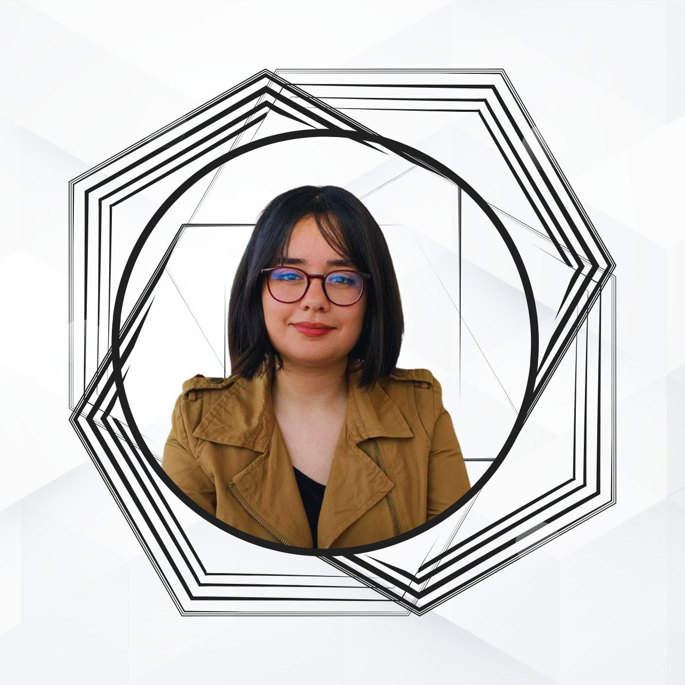
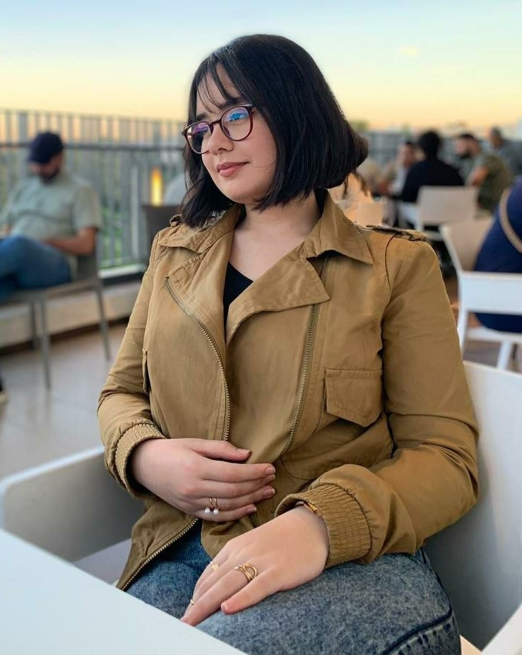

who i am ?

Hi! I'm Hajar Makrini, a 19-year-old student from Meknes, Morocco. I am a curious and passionate young woman, always eager to discover new things. I earned my baccalaureate in 2022. My academic journey then led me
to the School of Technology, where I began studying computer science. The following year,
I transitioned to the Faculty of Sciences and Techniques in Fez to further
pursue my passion for technology and innovation. My journey is marked by a
relentless pursuit of learning, which keeps me constantly progressing and improving.
Curiosity led me to explore my creativity, and that's how I discovered my passion
for design, particularly web design and graphic design. For me, art is a means of
expression that goes beyond simply communicating ideas. It is also a way to convey
accumulated feelings,
desires, opinions, and words that have no voice or are not well visualized.
My interests span across both design and programming. Design fuels my creativity, allowing me to craft websites,
posters, and visual content that express my ideas uniquely. Programming, on the other hand,
challenges me with complex problems and enables me to infuse personal touches into my
projects, which brings me immense satisfaction.
In addition to my passion for design and programming,
I love reading books and writing. Writing is a form of free expression for me,
where I can share my life experiences, reflections, and journeys.
It allows me to explore my ideas creatively and transform them into words.
Feel free to connect with me on any of my social networks,Check them out below !